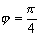
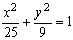
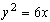

ЗАНЯТИЕ 3.8. ПОЛЯРНАЯ СИСТЕМА КООРДИНАТ
Контрольные вопросы
- Что такое полярные координаты точек? Укажите их связь с декартовыми координатами этой точки.
- Как от декартовых координат точки перейти к полярным координатам
и наоборот?
- Как написать уравнение линии в полярных координатах, если известно её уравнение в декартовых координатах и наоборот?
Задачи
- В полярной системе координат построить точки
,
,
,
,
,
 ,
,
,
 ,
,
.
- Построить линию (построение провести с помощью таблицы
значений r для ).
- Построить линии:
а) (спираль Архимеда),
б) (кардиоида).
- Построить линии:
а) ,
б) , в) .
- Написать в полярных координатах уравнение прямой, отсекающей от полярной оси отрезок
" а " и перпендикулярной к ней.
- Написать в полярных координатах уравнение окружности с центром в точке
С (0; а) и радиусом, равным " а ".
- Преобразовать к полярным координатам уравнения линий:
а)  ,
,
б) ,
в) у = 3,
г) у = х,
д) ,
е) .
- Преобразовать к декартовым координатам уравнения линии и построить эти линии:
а) ,
б) ,
в) .
- Написать канонические уравнения кривых второго порядка:
а) ,
б) ,
в) .
Ответы
-
-
-
-
- ;
- ;
- а) , б)
 ,
в) , г) ,
д) , е) ;
,
в) , г) ,
д) , е) ;
- а) х = а, б) , в)
;
- а)  , б) ,
в)  .